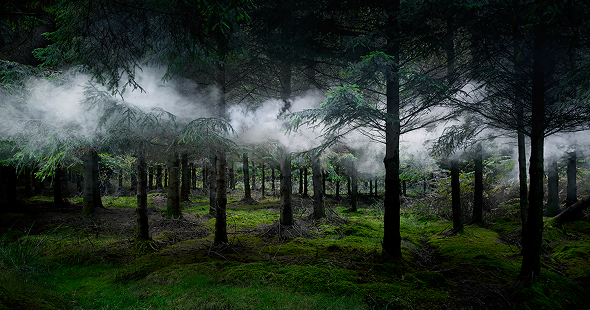
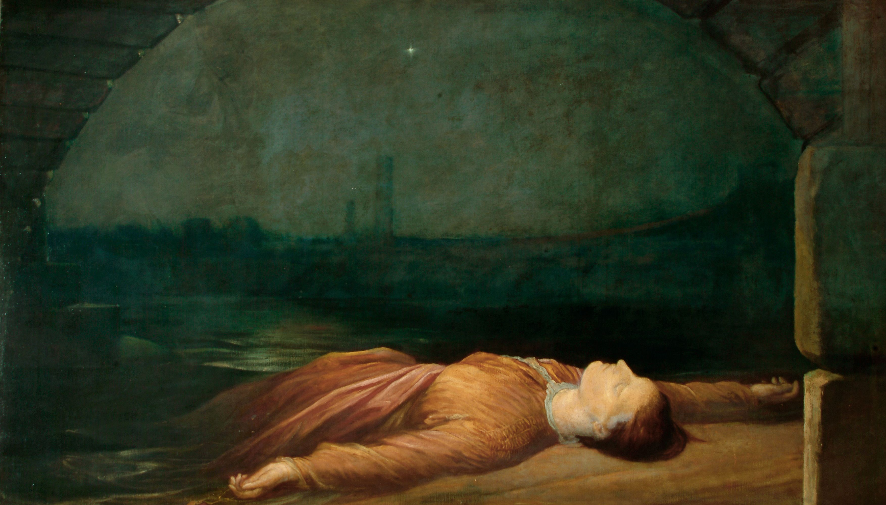

ტყეების იდეა მსოფლიო სახელოვნებო ისტორიაში

ტყეები ჯერ კიდევ პრეისტორიულ ხანაში ახდენდა ადამიანებზე გავლენას. ადამიანებს იქ ყოველთვის რაღაც შეუცნობელი, მომაჯადოებელი, საშიში ეგულებოდათ. მათ სჯეროდათ, რომ იქ სულები, ღმერთები, ალქაჯები ცხოვრობდნენ.
სრულად
დაცემული ქალის იდეა ხელოვნებაში

დაცემის იდეის პირველი წყარო ჩემი აზრით თვითონ ევა გახლდათ, რომელმაც მოისურვა აკრძალული ხილის დაგემოვნება და შეცნობა. დაცემის იდეა გარკვეულწილად ახალი ცოდნის მიღების იდეაზე გადის, რაიმე სიახლის მიღებაზე, რაღაცის შეცვლაზე სწორედ ამიტომ ხშირად ვხვდებით ისეთ დაცემულ ქალებს, რომლებიც ახალ საკუთარ თავს იძენენ
სრულად